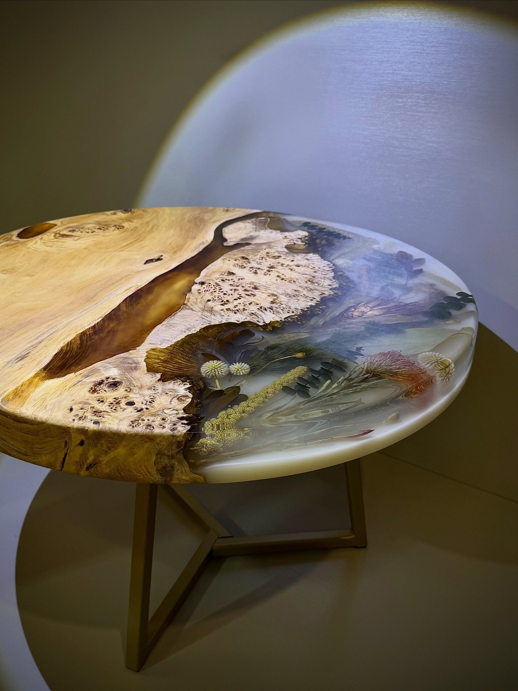
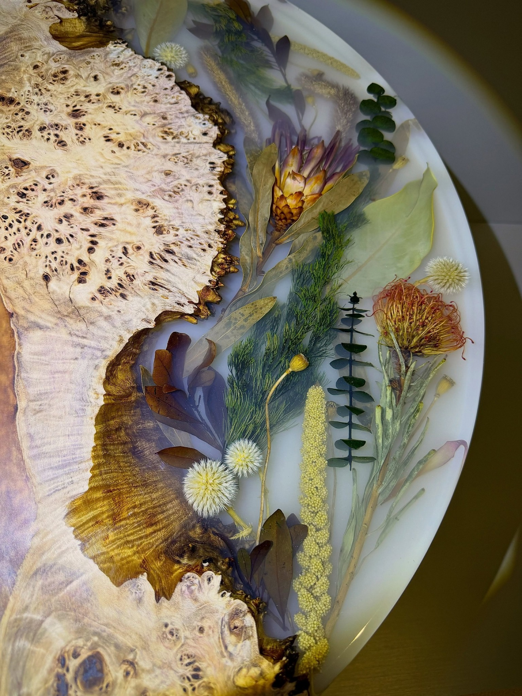
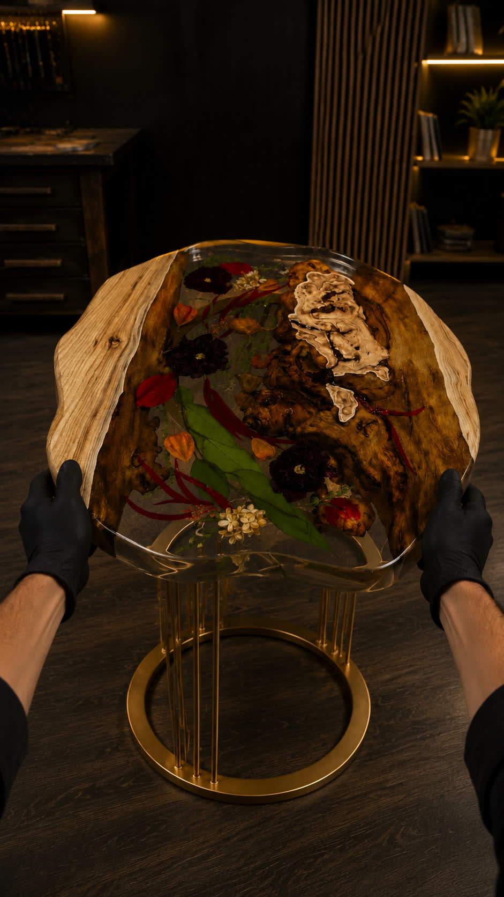
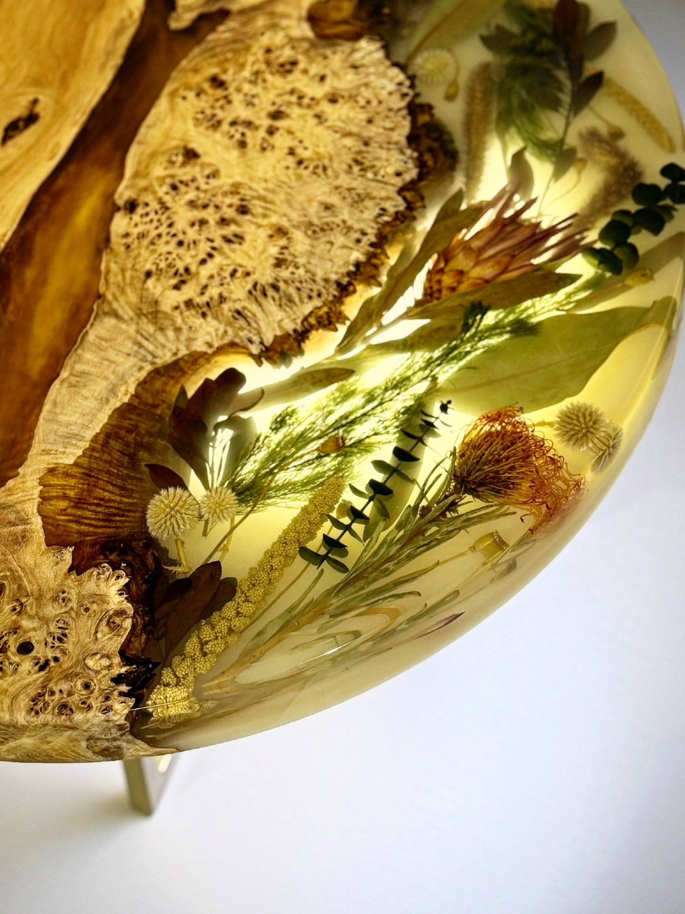
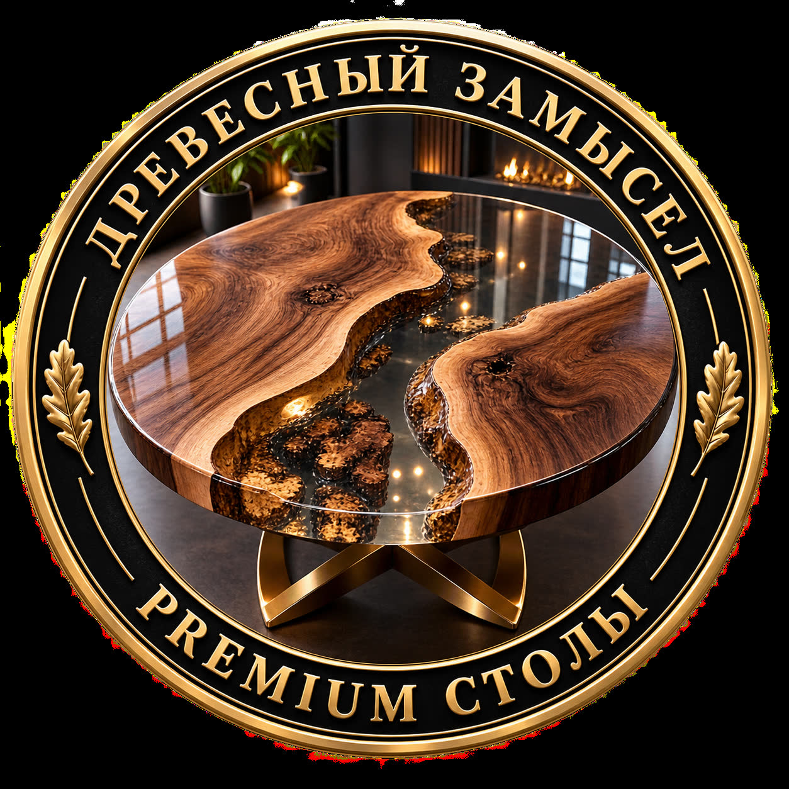

Натуральное дерево
Живой край, каповая фактура, выразительные сучки и естественная геометрия. Именно рисунок заготовки задаёт композицию.
МОСКВА И МОСКОВСКАЯ ОБЛАСТЬ
Натуральное дерево, прозрачная глубина смолы и настоящие растения внутри. Каждый предмет существует в единственном экземпляре.

ФИЛОСОФИЯ
Рисунок дерева не повторяется. Цветок, лист, изгиб кромки и пузырёк света в смоле становятся частью композиции. Поэтому две одинаковые работы здесь невозможны.
КОЛЛЕКЦИЯ / 2026
Каждая работа собирается вокруг конкретного фрагмента дерева. Цена зависит от размера, породы, объёма смолы, композиции и основания.
МАТЕРИАЛЫ
По фотографиям видны натуральные слэбы и каповые фрагменты дерева, прозрачная и молочная эпоксидная смола, сухоцветы и металлические либо деревянные основания. Точную породу дерева и состав покрытия для конкретного изделия лучше фиксировать в карточке заказа после выбора заготовки.
Живой край, каповая фактура, выразительные сучки и естественная геометрия. Именно рисунок заготовки задаёт композицию.
Прозрачная, дымчатая или молочная заливка. Смола создаёт глубину и фиксирует ботанические элементы внутри столешницы.
Сухоцветы, листья и декоративные растения располагаются вручную — поэтому повторить рисунок один в один невозможно.
Чёрный металл, латунный оттенок или дерево. Подстолье подбирается под геометрию столешницы и интерьер.
* Материалы определены визуально по предоставленным изображениям. Точная порода дерева и техническая спецификация уточняются для каждого проекта.

АВТОРСКИЙ ПОДХОД
Отбор дерева, положение каждого растения, глубина заливки и оттенок смолы собираются в одну композицию под конкретный будущий стол.
ПРОЦЕСС
Форма, размер, настроение и место в интерьере.
Подбор слэба, фактуры и природной композиции.
Фиксация деталей и поэтапная работа со смолой.
Шлифовка, полировка и установка основания.
ВИДЕО / ПРОЦЕСС
Полировка, работа с массивом и ручная сборка ботанической композиции. Короткие фрагменты процесса без постановочной витрины.
МАСТЕРСКАЯ / НОВЫЕ ВИДЕО
Пять новых фрагментов процесса: работа с деревом, подготовка поверхности, заливка, ботаническая композиция и финиш.

РУЧНАЯ РАБОТА
Визуально сложные столы особенно раскрываются в деталях: прозрачность смолы, глубина растений, природная кромка и финишная полировка работают как единая композиция.
Обсудить свой проект ↗
Природа внутри материала
сухоцветы · дерево · прозрачная смолаВИЗУАЛЬНЫЕ КОНЦЕПЦИИ
Дополнительные интерьерные и брендовые визуализации — как настроение для будущих проектов и подачи изделий.

Премиальная подача изделий из дерева и смолы.
ИНДИВИДУАЛЬНЫЙ ЗАКАЗ
Можно начать с фотографии интерьера, примерных размеров или просто идеи. Ксения поможет собрать концепцию будущей работы.